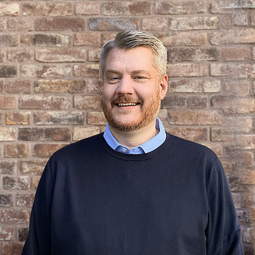

For over 15 years I have been building and leading agile engineering teams and coaching engineers in their personal growth and development. I strongly believe in servant leadership and the benefits of a healthy work environment and culture. With my strong technical background as a software developer, I am able to credibly lead, coach and motivate teams and engineers as a role model in words and actions.
During my years as a leader and manager I have always kept on programming and being highly involved in the software development process. This is important to me.
Areas of expertise
- Situational, modern and agile servant leadership in engineering environments and organizations.
- Active, clear, confident and explicit coaching that promotes individual development through positive and constructive feedback.
- Passionate and personal leadership characterized by energy, trust, competence and collaboration.
- Recruiting, staffing and retaining highly competent engineering teams.
- Inspiring, diverse and inclusive engineering environments where perspectives are valued, ideas welcome and where goals are reached and celebrated together.
- The ability to adapt and switch context between a strategic, tactical and operational mindset.
- Implementing and improving agile mindsets and DevOps practices.
- The constant strive for improvement in a learning culture with a collaborative attitude.
Key drivers and motivation
I get my energy from managing and evolving highly functioning engineering- and software development teams. I find it very stimulating to be confronted with situations where the outcome is not clear. To learn is to live and I truly enjoy sharing knowledge and the process of learning together with others. After 27 years in the IT industry, I still love every day I get to work with brilliant people on challenging projects.
Assignments
I am currently serving as Engineering Manager at Metry in Gothenburg, Sweden.
- Engineering Manager, Metry AB, 2022 - Current
- Engineering Manager, nShift AB, 2020 - 2022
- IT Manager, Hemtex AB, 2018 - 2020
- IT Manager, Eton AB, 2015 - 2018
- Manager/dept. IT Manager, DB Schenker AB, 2012 - 2014
- CTO/Software developer, SciPark AB, 2007 - 2012
- Mentor, LBS AB, 2006 - 2007
- Software developer, Retriever AB/AS, 1999 - 2006
- Computer game developer, AMG AB/TV4, 1998 - 1999
- Software developer, Ulricehamns Kommun, 1997 - 1998
- Software developer, Consultant, 1994 - 1997
Preferred technologies and stacks
I enjoy working with GNU/Linux on projects ranging from low-level embedded systems, IaaS/PaaS microservices, enterprise backend architecture to WebGL on the frontend.
- C, C++, Assembly, Python, PHP, Rust, Golang, GNU toolchain
- Java, Scala, Kotlin, Groovy, Maven, Gradle, Spring, Struts, Hibernate, Tomcat, Wildfly, JBoss
- TypeScript, JavaScript, Node.js, Deno, Svelte
- PostgreSQL, MySQL, MariaDB, MongoDB, Cassandra, Redis, Elasticsearch, Hadoop
- Amazon Web Services, Google Cloud Platform, Heroku, Firebase, Docker, Podman, LXC, K8
- GNU/Linux, UNIX, *BSD, macOS, Git, Bash, zsh, vim
Personal information
I was born in Sweden in 1978. I speak Swedish, English and Norwegian. I live in Borås with my wife, two children and a dog. My greatest passions in life is leadership and programming. I have been part of the demoscene since the late 80’s and I like to contribute to free and open source software. I also enjoy playing tabletop role-playing games and telling old computers to do magic tricks.
Organizations
I endorse the following organizations.